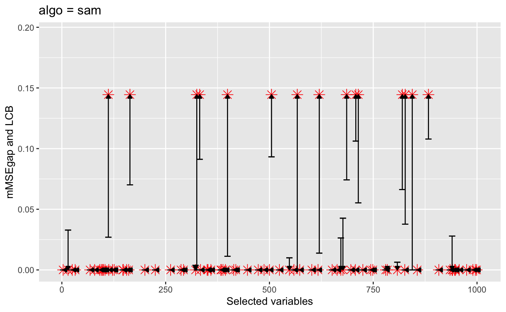

set.seed(1995) ## load required packages library(floodgate) library(methods) library(conformalInference) library(glmnet) library(lars) library(randomForest) library(SAM) library(ggplot2) ## load utility functions: related to model fitting source("../utils/algo_utils.R") #### problem setup n = 1000 # sample size p = 1000 # covariate dimension Xmodel = "gaussian" # covariate distribution rho = 0.3 # auto-correlation coefficient Ydist = "gaussian" # conditional model of response s = 20 # number of non-nulls amplitude = 5 # signal amplitude value split.prop = 0.5 # splitting proportion K = 500 # number of null replicates alevel = 0.05 # confidence level
## load model parameters of the covariate distribution load(paste0("../inst/rho", rho, "_Sigma.RData")) load(paste0("../inst/rho", rho, "_X_paras_gaussian.RData")) ## choose non-null varaibles randomly S_star = sort(sample(1:p,s)) beta = rep(0,p) beta[S_star] = sample(c(-1,1), s, replace = TRUE) * amplitude/sqrt(n) ## generate the covaraites X X = matrix(rnorm(n*p),n,p)%*% Sigma.chol ## Generate the response Y from a linear model Y = gen.Y(X, beta, Ydist = Ydist)
## sample null covariates nulls.list = sample.gaussian.nulls(X = X, S = as.list(1:p), K = K, gamma_X.list_S = gamma_X.list, sigma_X.list_S = sigma_X.list) ## compute the mMSEgap values mMSEgap = compute.movi(beta = beta, Xmodel = Xmodel, Ydist = Ydist, sigma_X.list = sigma_X.list, nulls.list = nulls.list)
## sample splitting i1 = sample(1:n, floor(n*split.prop)) i2 = (1:n)[-i1] n1 = length(i1) n2 = length(i2) ## use LASSO to estimate the conditional mean algo = "lasso" funs = funs.list[[algo]] ## run floodgate to obtain LCBs fg.out = floodgate(X, Y, i1, i2, nulls.list = nulls.list, gamma_X.list = gamma_X.list, sigma_X.list = sigma_X.list, Xmodel = Xmodel, funs, algo = algo, alevel = alevel, verbose = TRUE) #> Initial training on 500 samples with lasso algorithm... #> Calculating mu(Xk) for variable 3 with lasso algorithm on 500 samples without Monte Carlo samples... #> Calculating mu(Xk) for variable 58 with lasso algorithm on 500 samples without Monte Carlo samples... #> Calculating mu(Xk) for variable 68 with lasso algorithm on 500 samples without Monte Carlo samples... #> Calculating mu(Xk) for variable 71 with lasso algorithm on 500 samples without Monte Carlo samples... #> Calculating mu(Xk) for variable 91 with lasso algorithm on 500 samples without Monte Carlo samples... #> Calculating mu(Xk) for variable 98 with lasso algorithm on 500 samples without Monte Carlo samples... #> Calculating mu(Xk) for variable 112 with lasso algorithm on 500 samples without Monte Carlo samples... #> Calculating mu(Xk) for variable 120 with lasso algorithm on 500 samples without Monte Carlo samples... #> Calculating mu(Xk) for variable 126 with lasso algorithm on 500 samples without Monte Carlo samples... #> Calculating mu(Xk) for variable 147 with lasso algorithm on 500 samples without Monte Carlo samples... #> Calculating mu(Xk) for variable 164 with lasso algorithm on 500 samples without Monte Carlo samples... #> Calculating mu(Xk) for variable 178 with lasso algorithm on 500 samples without Monte Carlo samples... #> Calculating mu(Xk) for variable 197 with lasso algorithm on 500 samples without Monte Carlo samples... #> Calculating mu(Xk) for variable 221 with lasso algorithm on 500 samples without Monte Carlo samples... #> Calculating mu(Xk) for variable 253 with lasso algorithm on 500 samples without Monte Carlo samples... #> Calculating mu(Xk) for variable 283 with lasso algorithm on 500 samples without Monte Carlo samples... #> Calculating mu(Xk) for variable 293 with lasso algorithm on 500 samples without Monte Carlo samples... #> Calculating mu(Xk) for variable 325 with lasso algorithm on 500 samples without Monte Carlo samples... #> Calculating mu(Xk) for variable 332 with lasso algorithm on 500 samples without Monte Carlo samples... #> Calculating mu(Xk) for variable 350 with lasso algorithm on 500 samples without Monte Carlo samples... #> Calculating mu(Xk) for variable 359 with lasso algorithm on 500 samples without Monte Carlo samples... #> Calculating mu(Xk) for variable 360 with lasso algorithm on 500 samples without Monte Carlo samples... #> Calculating mu(Xk) for variable 395 with lasso algorithm on 500 samples without Monte Carlo samples... #> Calculating mu(Xk) for variable 399 with lasso algorithm on 500 samples without Monte Carlo samples... #> Calculating mu(Xk) for variable 436 with lasso algorithm on 500 samples without Monte Carlo samples... #> Calculating mu(Xk) for variable 443 with lasso algorithm on 500 samples without Monte Carlo samples... #> Calculating mu(Xk) for variable 453 with lasso algorithm on 500 samples without Monte Carlo samples... #> Calculating mu(Xk) for variable 458 with lasso algorithm on 500 samples without Monte Carlo samples... #> Calculating mu(Xk) for variable 460 with lasso algorithm on 500 samples without Monte Carlo samples... #> Calculating mu(Xk) for variable 501 with lasso algorithm on 500 samples without Monte Carlo samples... #> Calculating mu(Xk) for variable 505 with lasso algorithm on 500 samples without Monte Carlo samples... #> Calculating mu(Xk) for variable 543 with lasso algorithm on 500 samples without Monte Carlo samples... #> Calculating mu(Xk) for variable 558 with lasso algorithm on 500 samples without Monte Carlo samples... #> Calculating mu(Xk) for variable 564 with lasso algorithm on 500 samples without Monte Carlo samples... #> Calculating mu(Xk) for variable 567 with lasso algorithm on 500 samples without Monte Carlo samples... #> Calculating mu(Xk) for variable 568 with lasso algorithm on 500 samples without Monte Carlo samples... #> Calculating mu(Xk) for variable 602 with lasso algorithm on 500 samples without Monte Carlo samples... #> Calculating mu(Xk) for variable 607 with lasso algorithm on 500 samples without Monte Carlo samples... #> Calculating mu(Xk) for variable 620 with lasso algorithm on 500 samples without Monte Carlo samples... #> Calculating mu(Xk) for variable 637 with lasso algorithm on 500 samples without Monte Carlo samples... #> Calculating mu(Xk) for variable 675 with lasso algorithm on 500 samples without Monte Carlo samples... #> Calculating mu(Xk) for variable 686 with lasso algorithm on 500 samples without Monte Carlo samples... #> Calculating mu(Xk) for variable 708 with lasso algorithm on 500 samples without Monte Carlo samples... #> Calculating mu(Xk) for variable 714 with lasso algorithm on 500 samples without Monte Carlo samples... #> Calculating mu(Xk) for variable 730 with lasso algorithm on 500 samples without Monte Carlo samples... #> Calculating mu(Xk) for variable 780 with lasso algorithm on 500 samples without Monte Carlo samples... #> Calculating mu(Xk) for variable 808 with lasso algorithm on 500 samples without Monte Carlo samples... #> Calculating mu(Xk) for variable 820 with lasso algorithm on 500 samples without Monte Carlo samples... #> Calculating mu(Xk) for variable 826 with lasso algorithm on 500 samples without Monte Carlo samples... #> Calculating mu(Xk) for variable 827 with lasso algorithm on 500 samples without Monte Carlo samples... #> Calculating mu(Xk) for variable 844 with lasso algorithm on 500 samples without Monte Carlo samples... #> Calculating mu(Xk) for variable 859 with lasso algorithm on 500 samples without Monte Carlo samples... #> Calculating mu(Xk) for variable 883 with lasso algorithm on 500 samples without Monte Carlo samples... #> Calculating mu(Xk) for variable 907 with lasso algorithm on 500 samples without Monte Carlo samples... #> Calculating mu(Xk) for variable 908 with lasso algorithm on 500 samples without Monte Carlo samples... #> Calculating mu(Xk) for variable 933 with lasso algorithm on 500 samples without Monte Carlo samples... #> Calculating mu(Xk) for variable 935 with lasso algorithm on 500 samples without Monte Carlo samples... #> Calculating mu(Xk) for variable 940 with lasso algorithm on 500 samples without Monte Carlo samples... #> Calculating mu(Xk) for variable 946 with lasso algorithm on 500 samples without Monte Carlo samples... #> Calculating mu(Xk) for variable 948 with lasso algorithm on 500 samples without Monte Carlo samples... #> Calculating mu(Xk) for variable 954 with lasso algorithm on 500 samples without Monte Carlo samples... #> Calculating mu(Xk) for variable 971 with lasso algorithm on 500 samples without Monte Carlo samples... #> Calculating mu(Xk) for variable 984 with lasso algorithm on 500 samples without Monte Carlo samples... #> Calculating mu(Xk) for variable 999 with lasso algorithm on 500 samples without Monte Carlo samples... #> Calculating V_mean for lasso algorithm without Monte Carlo samples... #> Performing floodgate without Monte Carlo samples...
The following plot shows the floodgate lower confidence bound (LCB): the horizontal bar with a black color and the mMSEgap: the star-shaped point with a red color. The step of model fitting on the training data also outputs a selected subset \(S\), in additional to a regression function estimator \(\mu\). We only plot the LCBs for covariates in \(S\) here.
## extract output and produce plots inf.out = as.data.frame(fg.out$inf.out) S = unlist(fg.out$S) inf.out$mMSEgap = mMSEgap[S] ggplot(data = inf.out, aes(x = S, y = mMSEgap)) + ylim(0, max(inf.out$mMSEgap, inf.out$LCB) + 0.05) + ggtitle(paste0("algo = ", algo )) + ylab("mMSEgap and LCB") + xlab("Selected variables") + geom_point(color = "red", shape = 8, size = 3.5) + geom_errorbar(aes(ymin=LCB, ymax=LCB), width = 15, color = "black") + geom_segment(aes(x = S, y = LCB, xend = S, yend = mMSEgap), arrow = arrow(length = unit(0.15, "cm"), type = "closed"))
The arrow for a given covaraite starts from the LCB and ends at the mMSEgap. The arrow provides a good illustration of LCB’s performance, with its length being the half-width and its direction indicating coverage/miscoverage (upward: coverage; downward: miscovergae; leftward: coverage with \(\text{LCB}=\mathcal{I} =0\)).
## use SAM to estimate the conditional mean algo = "sam" funs = funs.list[[algo]] ## run floodgate to obtain LCBs fg.out = floodgate(X, Y, i1, i2, nulls.list = nulls.list, gamma_X.list = gamma_X.list, sigma_X.list = sigma_X.list, Xmodel = Xmodel, funs, algo = algo, alevel = alevel, verbose = TRUE) #> Initial training on 500 samples with sam algorithm... #> Calculating mu(Xk) for variable 3 with sam algorithm on 500 samples and 500 null samples... #> Calculating mu(Xk) for variable 15 with sam algorithm on 500 samples and 500 null samples... #> Calculating mu(Xk) for variable 25 with sam algorithm on 500 samples and 500 null samples... #> Calculating mu(Xk) for variable 32 with sam algorithm on 500 samples and 500 null samples... #> Calculating mu(Xk) for variable 68 with sam algorithm on 500 samples and 500 null samples... #> Calculating mu(Xk) for variable 79 with sam algorithm on 500 samples and 500 null samples... #> Calculating mu(Xk) for variable 91 with sam algorithm on 500 samples and 500 null samples... #> Calculating mu(Xk) for variable 95 with sam algorithm on 500 samples and 500 null samples... #> Calculating mu(Xk) for variable 98 with sam algorithm on 500 samples and 500 null samples... #> Calculating mu(Xk) for variable 100 with sam algorithm on 500 samples and 500 null samples... #> Calculating mu(Xk) for variable 104 with sam algorithm on 500 samples and 500 null samples... #> Calculating mu(Xk) for variable 112 with sam algorithm on 500 samples and 500 null samples... #> Calculating mu(Xk) for variable 113 with sam algorithm on 500 samples and 500 null samples... #> Calculating mu(Xk) for variable 122 with sam algorithm on 500 samples and 500 null samples... #> Calculating mu(Xk) for variable 126 with sam algorithm on 500 samples and 500 null samples... #> Calculating mu(Xk) for variable 147 with sam algorithm on 500 samples and 500 null samples... #> Calculating mu(Xk) for variable 148 with sam algorithm on 500 samples and 500 null samples... #> Calculating mu(Xk) for variable 156 with sam algorithm on 500 samples and 500 null samples... #> Calculating mu(Xk) for variable 161 with sam algorithm on 500 samples and 500 null samples... #> Calculating mu(Xk) for variable 164 with sam algorithm on 500 samples and 500 null samples... #> Calculating mu(Xk) for variable 200 with sam algorithm on 500 samples and 500 null samples... #> Calculating mu(Xk) for variable 225 with sam algorithm on 500 samples and 500 null samples... #> Calculating mu(Xk) for variable 262 with sam algorithm on 500 samples and 500 null samples... #> Calculating mu(Xk) for variable 287 with sam algorithm on 500 samples and 500 null samples... #> Calculating mu(Xk) for variable 293 with sam algorithm on 500 samples and 500 null samples... #> Calculating mu(Xk) for variable 322 with sam algorithm on 500 samples and 500 null samples... #> Calculating mu(Xk) for variable 325 with sam algorithm on 500 samples and 500 null samples... #> Calculating mu(Xk) for variable 332 with sam algorithm on 500 samples and 500 null samples... #> Calculating mu(Xk) for variable 334 with sam algorithm on 500 samples and 500 null samples... #> Calculating mu(Xk) for variable 350 with sam algorithm on 500 samples and 500 null samples... #> Calculating mu(Xk) for variable 352 with sam algorithm on 500 samples and 500 null samples... #> Calculating mu(Xk) for variable 359 with sam algorithm on 500 samples and 500 null samples... #> Calculating mu(Xk) for variable 383 with sam algorithm on 500 samples and 500 null samples... #> Calculating mu(Xk) for variable 384 with sam algorithm on 500 samples and 500 null samples... #> Calculating mu(Xk) for variable 388 with sam algorithm on 500 samples and 500 null samples... #> Calculating mu(Xk) for variable 394 with sam algorithm on 500 samples and 500 null samples... #> Calculating mu(Xk) for variable 399 with sam algorithm on 500 samples and 500 null samples... #> Calculating mu(Xk) for variable 414 with sam algorithm on 500 samples and 500 null samples... #> Calculating mu(Xk) for variable 419 with sam algorithm on 500 samples and 500 null samples... #> Calculating mu(Xk) for variable 447 with sam algorithm on 500 samples and 500 null samples... #> Calculating mu(Xk) for variable 473 with sam algorithm on 500 samples and 500 null samples... #> Calculating mu(Xk) for variable 487 with sam algorithm on 500 samples and 500 null samples... #> Calculating mu(Xk) for variable 500 with sam algorithm on 500 samples and 500 null samples... #> Calculating mu(Xk) for variable 505 with sam algorithm on 500 samples and 500 null samples... #> Calculating mu(Xk) for variable 524 with sam algorithm on 500 samples and 500 null samples... #> Calculating mu(Xk) for variable 548 with sam algorithm on 500 samples and 500 null samples... #> Calculating mu(Xk) for variable 559 with sam algorithm on 500 samples and 500 null samples... #> Calculating mu(Xk) for variable 567 with sam algorithm on 500 samples and 500 null samples... #> Calculating mu(Xk) for variable 573 with sam algorithm on 500 samples and 500 null samples... #> Calculating mu(Xk) for variable 602 with sam algorithm on 500 samples and 500 null samples... #> Calculating mu(Xk) for variable 617 with sam algorithm on 500 samples and 500 null samples... #> Calculating mu(Xk) for variable 620 with sam algorithm on 500 samples and 500 null samples... #> Calculating mu(Xk) for variable 651 with sam algorithm on 500 samples and 500 null samples... #> Calculating mu(Xk) for variable 663 with sam algorithm on 500 samples and 500 null samples... #> Calculating mu(Xk) for variable 672 with sam algorithm on 500 samples and 500 null samples... #> Calculating mu(Xk) for variable 677 with sam algorithm on 500 samples and 500 null samples... #> Calculating mu(Xk) for variable 686 with sam algorithm on 500 samples and 500 null samples... #> Calculating mu(Xk) for variable 696 with sam algorithm on 500 samples and 500 null samples... #> Calculating mu(Xk) for variable 707 with sam algorithm on 500 samples and 500 null samples... #> Calculating mu(Xk) for variable 708 with sam algorithm on 500 samples and 500 null samples... #> Calculating mu(Xk) for variable 714 with sam algorithm on 500 samples and 500 null samples... #> Calculating mu(Xk) for variable 725 with sam algorithm on 500 samples and 500 null samples... #> Calculating mu(Xk) for variable 744 with sam algorithm on 500 samples and 500 null samples... #> Calculating mu(Xk) for variable 749 with sam algorithm on 500 samples and 500 null samples... #> Calculating mu(Xk) for variable 780 with sam algorithm on 500 samples and 500 null samples... #> Calculating mu(Xk) for variable 784 with sam algorithm on 500 samples and 500 null samples... #> Calculating mu(Xk) for variable 808 with sam algorithm on 500 samples and 500 null samples... #> Calculating mu(Xk) for variable 820 with sam algorithm on 500 samples and 500 null samples... #> Calculating mu(Xk) for variable 826 with sam algorithm on 500 samples and 500 null samples... #> Calculating mu(Xk) for variable 827 with sam algorithm on 500 samples and 500 null samples... #> Calculating mu(Xk) for variable 844 with sam algorithm on 500 samples and 500 null samples... #> Calculating mu(Xk) for variable 856 with sam algorithm on 500 samples and 500 null samples... #> Calculating mu(Xk) for variable 883 with sam algorithm on 500 samples and 500 null samples... #> Calculating mu(Xk) for variable 908 with sam algorithm on 500 samples and 500 null samples... #> Calculating mu(Xk) for variable 935 with sam algorithm on 500 samples and 500 null samples... #> Calculating mu(Xk) for variable 940 with sam algorithm on 500 samples and 500 null samples... #> Calculating mu(Xk) for variable 941 with sam algorithm on 500 samples and 500 null samples... #> Calculating mu(Xk) for variable 946 with sam algorithm on 500 samples and 500 null samples... #> Calculating mu(Xk) for variable 948 with sam algorithm on 500 samples and 500 null samples... #> Calculating mu(Xk) for variable 957 with sam algorithm on 500 samples and 500 null samples... #> Calculating mu(Xk) for variable 975 with sam algorithm on 500 samples and 500 null samples... #> Calculating mu(Xk) for variable 990 with sam algorithm on 500 samples and 500 null samples... #> Calculating mu(Xk) for variable 996 with sam algorithm on 500 samples and 500 null samples... #> Calculating mu(Xk) for variable 999 with sam algorithm on 500 samples and 500 null samples... #> Performing floodgate based on Monte Carlo samples.. ## extract output and produce plots inf.out = as.data.frame(fg.out$inf.out) S = unlist(fg.out$S) inf.out$mMSEgap = mMSEgap[S] ggplot(data = inf.out, aes(x = S, y = mMSEgap)) + ylim(0, max(inf.out$mMSEgap, inf.out$LCB) + 0.05) + ggtitle(paste0("algo = ", algo )) + ylab("mMSEgap and LCB") + xlab("Selected variables") + geom_point(color = "red", shape = 8, size = 3.5) + geom_errorbar(aes(ymin=LCB, ymax=LCB), width = 15, color = "black") + geom_segment(aes(x = S, y = LCB, xend = S, yend = mMSEgap), arrow = arrow(length = unit(0.15, "cm"), type = "closed"))
